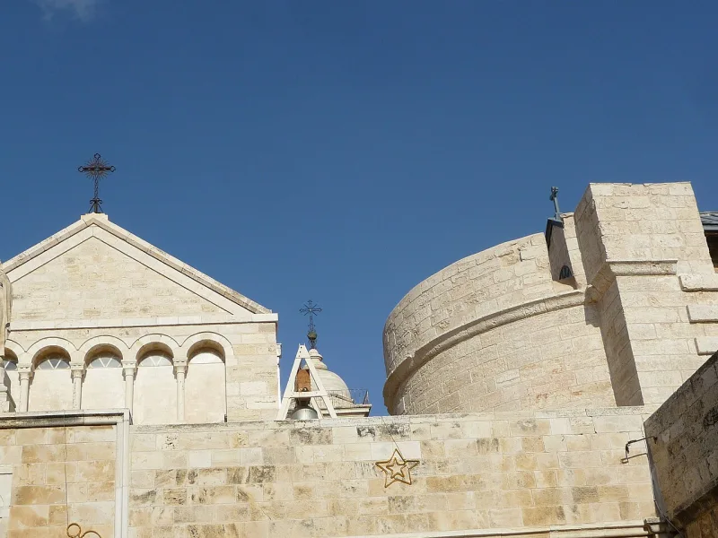
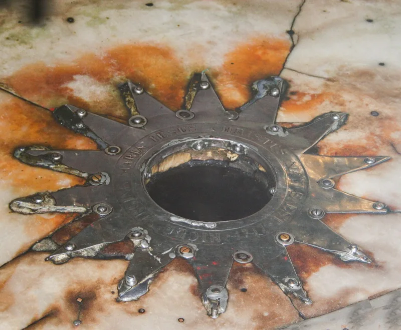
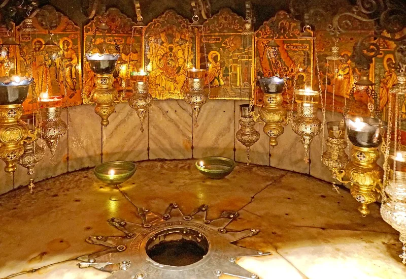

Serious people argue this both ways. Say so before your friend does.
Micah wrote in the 700s BC. Micah 5:2 says a ruler over Israel will come out of Bethlehem Ephratah, and calls the town small — which it was.
Then it adds that his "goings forth have been from of old, from everlasting."
One is about a place: this ruler comes from Bethlehem. The other is about time: he existed before he was born.
The first is simple and hard to argue with. The second is where all the disagreement is.
That the Hebrew phrase means an ancient family line, not existence from eternity. So the verse would be saying his ancestry goes back a long way — to David, and to Judah.
That is a fair reading of the words, and the Hebrew can carry it.
Contested. The Bethlehem part is solid.
The "from everlasting" part is a real translation debate. A Christian who pretends it is obvious will get corrected and lose the room.
Used gently it adds weight to the whole picture. Used as a knockout punch it hands your friend an easy win.
"How do you read the second half of Micah 5:2? I've heard it taken two ways."



Bethlehem here names David's clan, they say, so the verse promises his line.
The counter-missionary reading is that Micah names Bethlehem as the clan seat of David's family. 'From you' speaks to the family stock. Ephrathah is David's clan, as in Ruth 4:11 and 1 Samuel 17:12. So the verse promises a ruler descended from David, not a birthplace.
On that reading, 'origins from of old' means his family line reaches far back. It does not mean he existed before he was born.
They add that applying it to Jesus cannot be checked. The two birth accounts differ. Matthew has a flight to Egypt under Herod. Luke has a census under Quirinius, a decade later. The census itself is historically doubtful. And skeptics argue that Bethlehem was written into the story because the prophecy was known.
Contested: the Messiah link is granted, but pinning the verse on Jesus is not.
The classical Jewish sources grant the identification itself. This verse is about the Messiah. That part is solid, and worth settling early, because it means both traditions agree that messianic prophecy with checkable content exists.
What is genuinely contested is applying it to Jesus. That rests on the birth narratives, and on a reading of 'from everlasting' that the Hebrew does not force. Use the verse to open the category. Do not use it as proof on its own.